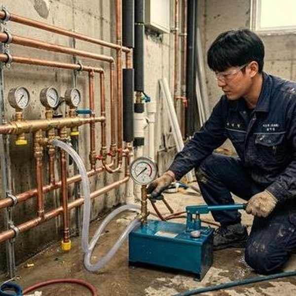
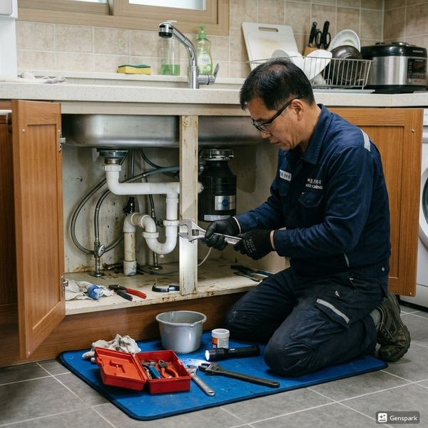
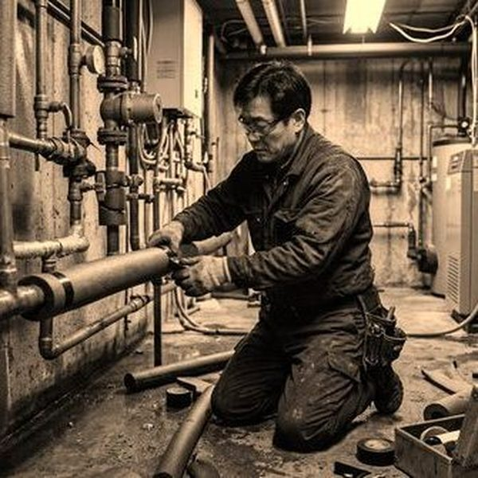

제우스시설관리 | 2025년 4월

신축 아파트의 배관 공사는 다양한 협력업체가 관여하기 때문에 품질 편차가 큽니다. 입주 후 누수나 배수 문제가 발견되면 책임 주체를 파악하기 어렵고, 수리 과정에서 인테리어가 손상될 수 있습니다.
✅ 수압 테스트 - 모든 배관이 정상 수압(0.2~0.5MPa) 견디는지 확인
✅ 누수 확인 - 배관 연결부와 벽 내부의 습기 흔적 확인
✅ 배수 테스트 - 싱크대, 욕조, 변기 배수 속도 확인
✅ 냄새 확인 - 하수 냄새 역류 여부
✅ 소음 확인 - 배관에서 이상음 발생 여부
✅ 수전 작동 - 모든 수도꼭지의 수압과 누수 확인
✅ 배수 트랩 - 각 배수 입구의 트랩 물 고임 확인
✅ 온수 공급 - 온수기 연결 상태, 온수 온도 확인
건설회사 하자담당자와 함께 점검하며, 문제점을 사진으로 남겨두세요. 하자보수 신청 시 객관적인 증거가 필요합니다.
입주 전 발견된 배관 결함은 건설회사의 책임입니다. 하자보수 신청 후 지정된 기간 내(일반적으로 10일)에 수리가 완료되어야 합니다. 입주 후 발견 시 책임 귀속이 복잡해지므로 주의하세요.
배관 결함에 대한 보증 기간은 일반적으로 2년입니다. 입주 후 1년 이내에 문제가 발견되면 건설사에 무상 수리를 요청할 수 있습니다.
특히 대규모 아파트의 공용 간선 배관은 입주 후 문제 발생이 자주 보도됩니다. 가능하다면 입주 전 공용 배관의 CCTV 조사를 요청하는 것이 좋습니다.
신축 아파트도 배관 결함으로부터 자유로울 수 없습니다. 입주 전 철저한 점검으로 장기 안주 환경을 확보하세요.

